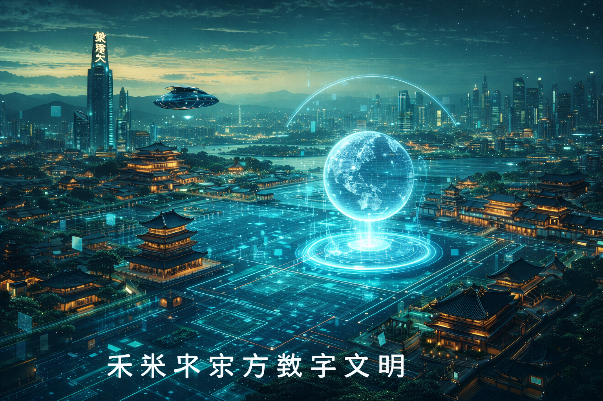

未来东方海报生成主视觉占位

一句灵感，就足以让纹样、材质与东方构图重新组合
当非遗进入海报生成系统，它不该被磨平成普通模板，而应继续保留自身的文化气息、材质感与时代情绪。
输入一句主题，例如：“盛唐花钿与未来玉石光影”。
AI 将输出符合世界观的文创海报概念与画面描述。
这里不把 AI 做成冰冷工具列表，而是做成一座未来东方创作台。 文创海报、视频脚本与文化文案不只是自动生成结果，而是让非遗重新进入当代视觉和传播语境。
当非遗进入海报生成系统，它不该被磨平成普通模板，而应继续保留自身的文化气息、材质感与时代情绪。
输入一句主题，例如：“盛唐花钿与未来玉石光影”。
AI 将输出符合世界观的文创海报概念与画面描述。

这一模块会把非遗从静态介绍，转译为更适合当代传播的动态叙事，包括镜头语言、情绪弧线与讲述方式。
自动生成分镜、运镜建议与旁白节奏。
帮助非遗内容从“资料”变成“可传播的故事”。

不是用工业化文案抹平文化差异，而是帮助传承人把复杂技艺翻译成今天依然愿意被阅读、被理解、被转发的语言。
可生成品牌故事、展览标题、活动文案与产品介绍。
让非遗表达保持温度，同时拥有传播效率。
这里展示的不是“SKU”，而是未来非遗如何以作品形式重新进入生活。每一件文创都更像漂浮在展厅中的艺术装置。

将玉石、金属与未来东方结构重新组合，让佩戴成为文化延续的一种方式。

让传统纹样不只复用过去，而在新的排布和媒介中继续生长。

当针脚与光效、材质与屏幕相遇，绣面也能成为新的数字作品表面。
这一段是整页的视觉高潮。它想表达的不是一个赛博朋克城市，而是一座仍保留东方气质、同时允许技艺和数字文明共同存在的未来长安。

未来长安数字文明场景占位